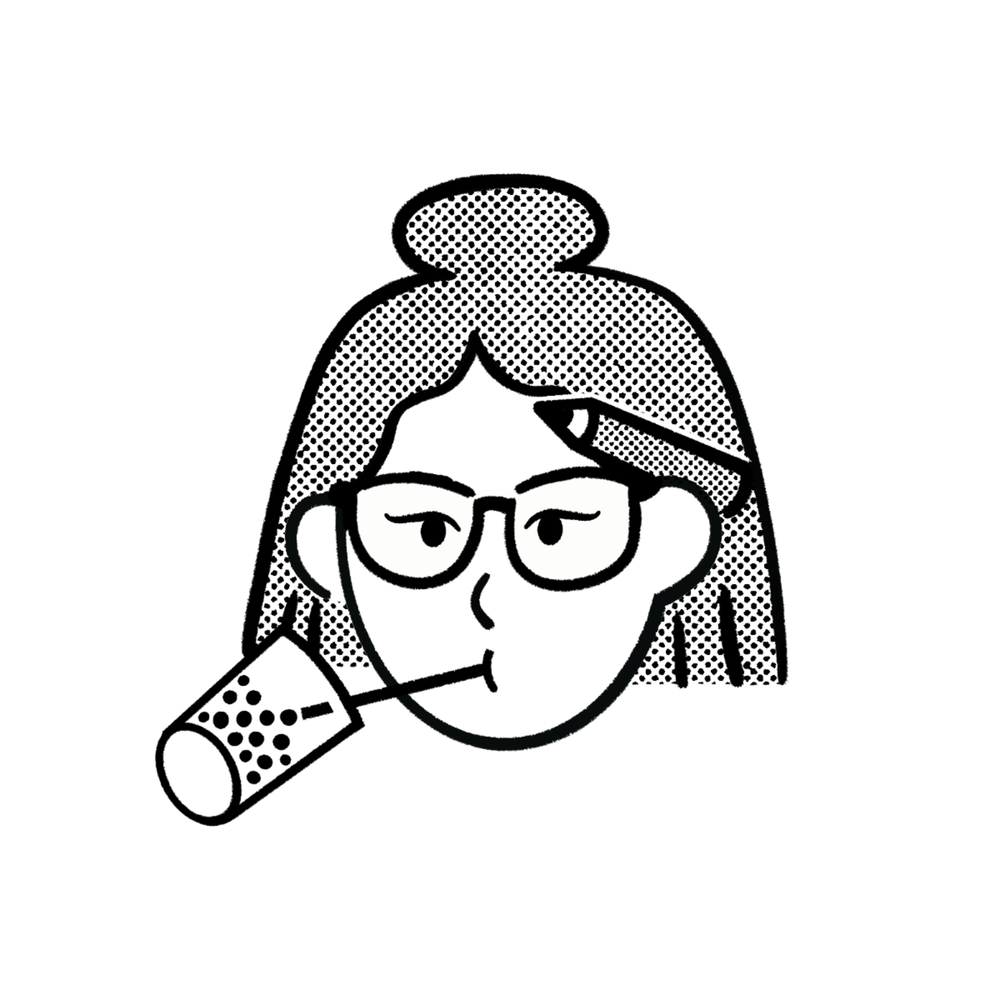

Think in more directions.
I can test different framings, flows and expressions early—then use design judgement to choose what deserves more attention.
↗
A human-led, AI-assisted practice
I bring the questions, context and point of view. AI helps me explore more possibilities and make ideas tangible sooner.
A little more about how I workA creative collaborator
02 / The point of viewI bring the intent, the context and the critical eye. AI gives me more room to explore, challenge my first idea and bring the promising ones to life.
It doesn’t replace the thinking behind the work. It helps me move between thinking and making with less distance—and take ideas further than I could on my own.
More room to make
03 / What it opens upI can test different framings, flows and expressions early—then use design judgement to choose what deserves more attention.
↗From a rough thought to a working interaction, AI helps me make ideas tangible enough to experience, question and refine.
✳I can step into new parts of the creative process, experiment with unfamiliar approaches and keep the experience connected to its purpose.
＋The collaboration, in practice
04 / How I workI bring the brief, constraints, audience and point of view.
I use AI to generate, compare and prototype options worth considering.
I critique, refine and decide what serves people and the product.
The tools can make more possible.
Direction and responsibility stay with me.
A project made with the process
05 / Open the folderI shaped the ideas, story and visual direction. Then I used AI to help turn that vision into a working portfolio—and to stretch how I work across Figma, generative design and code.
Along the way, I connected tools through MCPs, explored visual directions with generative design, and used vibe coding to bring prototypes to life sooner. The judgement, edits and final calls stayed human: mine.
The tools helped me move faster. The taste, choices and responsibility are still mine.